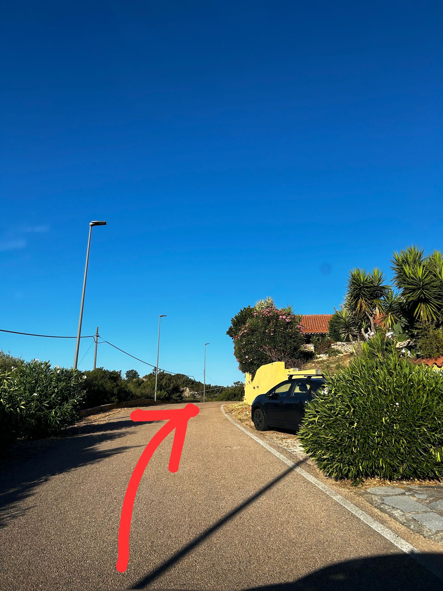
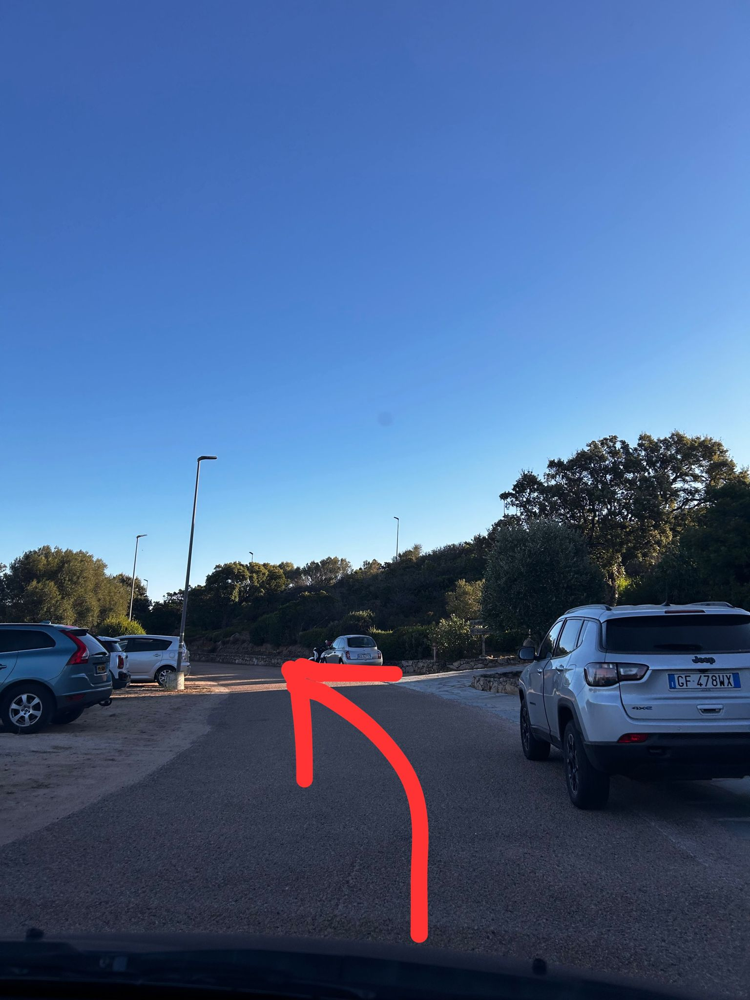
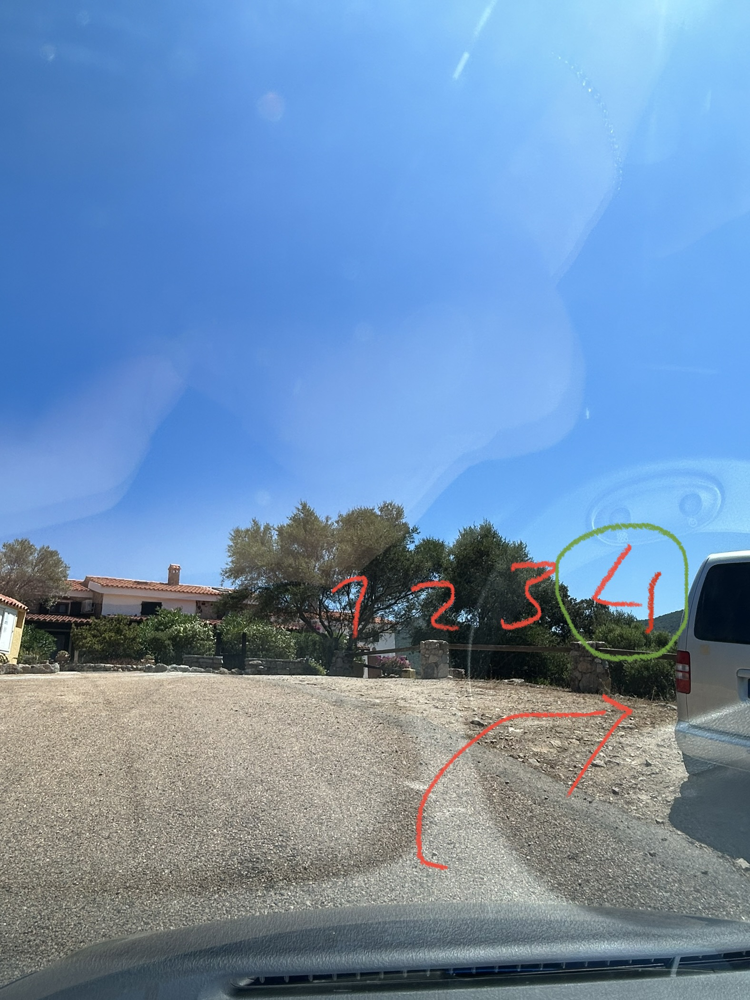

Arrival Instructions
The little house is located in the Sole Ruiu village at Via Diamanti No. 7.
Please communicate the arrival time for check-in with Mr. Piero well in advance.
- From Olbia (airport or ferry terminal), take the SS Orientale Sarda 125 towards Arzachena/Costa Smeralda.
- After leaving Olbia, drive a few kilometers until you reach the large roundabout Piliezzu.
- At the roundabout, take the second exit to stay on SS 125 Orientale Sarda.
- After about 3.8 km, before a right curve, leave the main road and turn left onto Via Sole Ruiu.
- Continue along this road for just over 1 km (passing the agriturisms "Stazzu Li Paladini" on the right and "Agrisole" on the left).
- Then turn right onto a steep road towards Residence Sole Ruiu.
- Pass the raised barrier marking the entrance to the village and proceed at a moderate speed.
- Immediately after the entrance barrier, take the uphill road on the right with a sign indicating the Diamanti A block (do not confuse it with Diamanti B, which is just before).
- Take this little road to the open space on the right where you will park in the fourth (penultimate) position.
Visual information on how to get to the house after passing the entrance barrier of the village:
1

2
3
4

5
